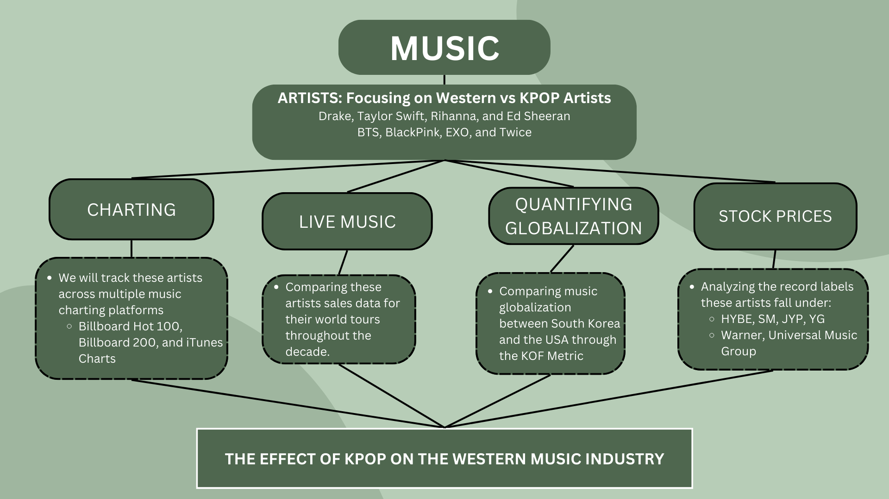
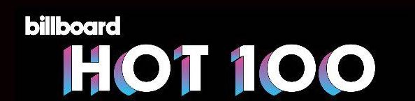

Conclusions
Before making any conclusions about the effect of KPOP of the Western Music Industry, let’s take a look at out big picture to summarize each sector of analysis.

Charting
Question 1: How do Western Artists compare to KPOP on the Billboard Hot 100 over time?

From the Billboard Hot 100 Chart, we can see that Western Artists dominated the charts in comparison to KPOP artists, with BTS being the only KPOP artists to make it on the Hot 100 from 1958 - 2021. This is due to a number of factors, the main reason being that KPOP on recently entered in the Western music industry and radio play is little to none for KPOP songs in the United States. Radio play is important to note as that is one of the metrics Billboard uses for charting.
Musical Characteristics
Question 2: For each western artist, what can be said about their music characteristics in comparison to KPOP artists?
Question 7: Can we predict each artist’s popularity in the coming years?
Question 9: For each artist, how do their musical characterists effect their forecasted popularity?
Thus far, we were able to conclude that KPOP artists, on average, tend to have a higher danceability than Western artists. Additionally, KPOP artists also tended to have larger speechiness than Western artists, with the exception of Beyoncé and Drake. This is due to the fact that almost all KPOP groups have designated rappers for every song in comparison to Western pop singers that don’t.
Going forward, we’ll also predict each artists popularity for the coming years and the musical characteristics that best forecast popularity. Based on the current EDA, popularity seems to be heavily based on speechiness, and thus, KPOP, along side Drake’s discography, seems to have a higher popularity than other Western Artists.

Globalization
Question 8: Has cultural globalization been impacted since the onset of KPOP in West?
Question 3: What is the relationship between cultural globalization in the U.S. and South Korean international tourism?
Since the onset of KPOP charting in the West, we saw through the AMIRA model that the cultural globalization index within the United States continued to increase, with the forecast also showing an increase in the index. However, pinpointing whether this was due to Korean cultural exchange was the second step, which is why I moved to using an AR + ARCH model with Korean tourism as an additional metric.
When taking into account Korean international passengers on cultural globalization within the US, we saw that globalization trended downwards in the coming years. This could mean that when using international travel into South Korea as a predictor, cultural globalization decreases in the United States. Thus, this could mean that in the future, we may be seeing a slight decrease in Korean media being embraced within the United States.
Record Label Stocks
Question 4: Is KPOP as a whole propelling into the West or is it a a specific artist/group?
Question 5: Does HYBE seem to fall under the Western music industry, the KPOP industry, or are they in a new league?
Question 6: Accounting for volatility, will HYBE continue its current success, specifically in comparison to the traditionally Western labels?

After modeling the stock prices of HYBE against both Western and Korean record labels, we saw that HYBE seems to have a negative foecasting when predicted on the “Big 3”, while HYBE sees a positively trended forecast when predicted on Western labels Universal Music Group and SONY. Contrarily, the other Korean lables seem to have postively trended forecast when predicted with HYBE. Thus, rather than KPOP in general dominating the music industry, we can say that artists from HYBE, specifically their most popular artist, BTS, has had the biggest impact on the stock market.
Similarly, it can be noted that through the analysis of the VAR models created as well as the ARCH model, HYBE seems to be significantly related to Korean record labels in comparison to the Western records labels.
Lastly, we can see from the ARCH model that accounting for all the volatility in the data results in a constant prediction, for the next 50 days. This could mean a number of things, but one that we can speak about is that the predictors (SM, JYP, and YG) are not the best indicators of predicting HYBE stock prices. Thus, ARCH may not be the best model for predicting HYBE stock.
Final Thoughts
10. What combined conclusions can be drawn from the four analytical venues demonstrated in the big-ideas chart?
Thus, we can say that KPOP has had a significant effect on the music industry as of recent. We have see that KPOP artists like BTS has recently entered the Billboard Hot 100, taking the first steps for the genre. Additionally, we saw that musically, popular music in the US is gravitating towards an R&B and Hip Hop sound, which, many KPOP groups have garnered a sound that blends both genres with intense dancability. In terms of a cultural shift, we can only see a slight increase in korean globalization within the Western world, however, record labels like HYBE have carved their own path as one of the leading record labels in the entire industry. It’s appart that KPOP groups have always been inspired by Western artists, but it is also clear that many groups are now defining a genre that will be a stand out in the Western music industry.